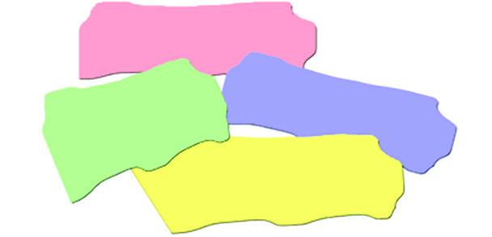
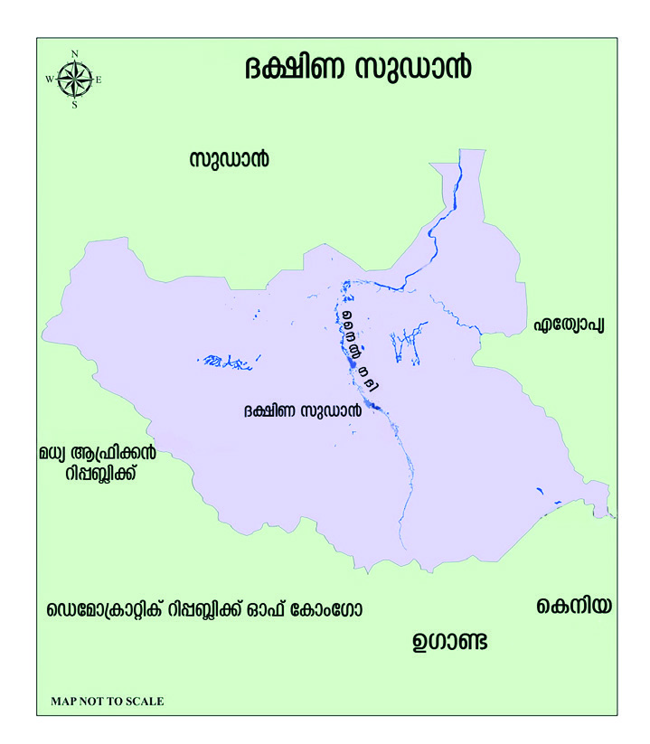
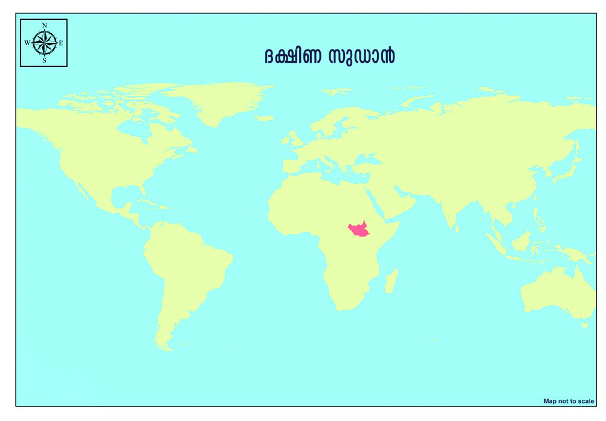
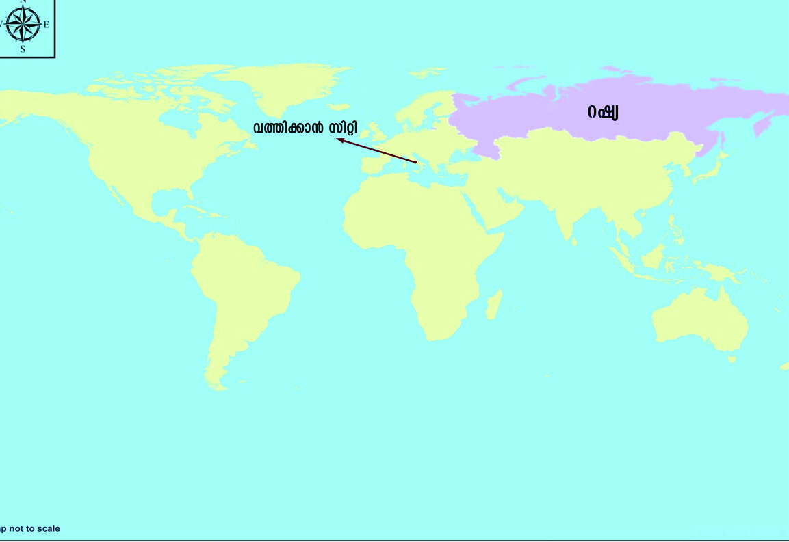
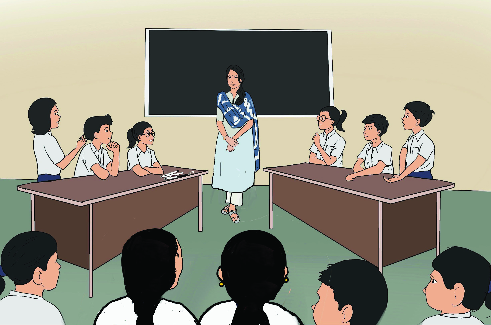

ഹിിറ്റ്് ലറുുടെെ സൈൈനിിക ആക്രമണംം കാരണംം സ്വന്തംം രാജ്യയത്ത്് ഒരു ഇടുങ്ങിിയ മുറിയിൽ ഒളിിവുു
ജീവിതംം നയിിക്കേÚണ്ടിിവന്ന ആൻ ഫ്രാാങ്ക്് തന്റെെź പ്രിിയപ്പെെƀട്ട ഡയറിയായ 'കിറ്റി 'യിൽ കുറിച്ചിിട്ട
വരിികളാണ് മുകളിിൽ കൊ�ൊടുത്തിട്ടുള്ളത്.
ഇവിടെെ ആൻ ഫ്രാാങ്ക്് എന്തെ�ല്ലാാമാണ് ആഗ്രഹിിക്കുന്നത്?
• സ്വാാ�തന്ത്ര്യയത്തോ�ോടെെ ജീവിക്കാൻ
• ................................................................
• ................................................................
• ................................................................
നമ്മുുടെെ മാതൃരാജ്യം�ം എന്തെ�ല്ലാാമാണ് നമുുക്ക് ഉറപ്പുനൽകുന്നത്? ചർച്ച ചെ�യ്യൂൂ.
“പുുറത്തുുപോ�ോകാാൻ
അവസരംം കിട്ടിിയാാൽ ആദ്യംDzം
എന്തുു ചെxയ്യണമെെന്നാാണ്
ഓരോ�ോ ആളിിന്റെെźയുംം� ആഗ്ര
ഹമെെന്നതിിനെെ ക്കുുറിച്ച്്
ഞങ്ങൾ ചർച്ച നടത്തി
യിരിക്കുുന്നു. പുുറത്തുു
പോ�ോയി മിസ്റ്റർ വോ�ോസനെെ
കാാണാാനാാണ് ഡാാഡിിക്ക്
ആഗ്രഹം, പീറ്ററിന്
ടൗണിൽ പോ�ോയി സിനിമ
കാാണണം, എനിക്ക് സ്വാ�ത
ന്ത്ര്യംം� എന്നത്
് തന്നെ� വലിിയ
ആനന്ദമാായി തോ�ോന്നുന്നു.
അതുകൊ�ൊണ്ട്് എന്ത്
ചെxയ്യണമെെന്ന് തന്നെ� ചിന്തി
ക്കാാൻ പറ്റുന്നില്ല. പക്ഷേä
ഒന്നെ�നിിക്കറി
ിയാംDZ, എല്ലാാ
റ്റിലും�ം അധിികം ഞാാൻ
ഇഷ്ടപ്പെെƀടുന്നത്
് ഞങ്ങളു
ടേ�ത്് മാാത്രമാായ ഒരു വീടും�ം
സഞ്ചാാര സ്വാ�തന്ത്ര്യയവു
ു
മാാണ്. പിന്നെ� എന്റെെź
സ്കൂൂളും�ം പഠനവുംം� . ഞാാൻ
എന്റെെź രാാജ്യയത്തെ� സ്നേǜഹി
ക്കുുന്നു ഞാാനീ ഭാാഷയെ�
സ്നേǜഹിക്കുുന്നു ...ഇവിടെെത്ത
ന്നെ� ജോ�ോലിി ചെxയ്ത്് ജീവിക്കാാ
നാാഗ്രഹിക്കുുന്നു.
രാാഷ്ട്രവുംംc ഗവൺമെെന്റുംംc
രാാഷ്ട്രവുംംc ഗവൺമെെന്റുംംc
3
അവലംംബംം - 'ആൻ ഫ്രാാങ്കിന്റെെź
ഡയറിക്കുറിപ്പുകൾ'
Page 37


Page 38


സാാമൂൂഹ്യയശാാസ്ത്രംം ക്ലാാസ്
സാാമൂൂഹ്യയശാാസ്ത്രംം ക്ലാാസ് VI
VI
38
ഭാാഗംം
ഭാാഗംം 1
രാാഷ്ട്രവുംംc ജനങ്ങളും�ം
കോ�ോവി
ിഡ് 19: ഏത് സാഹചര്യവുംം�
കോ�ോവി
ിഡ് 19: ഏത് സാഹചര്യവുംം�
നേ�രിിടാൻ രാഷ്ട്രംം തയ്യാറാണെ�ന്ന്്
നേ�രിിടാൻ രാഷ്ട്രംം തയ്യാറാണെ�ന്ന്്
ഇന്ത്യ
ഇന്ത്യ
റിപ്പബ്ലിിക് ദിിനാഘോvോഷംം: അതിർ
റിപ്പബ്ലിിക് ദിിനാഘോvോഷംം: അതിർ
ത്തിയിൽ സുരക്ഷ ശക്തമാക്കി
ത്തിയിൽ സുരക്ഷ ശക്തമാക്കി
ഇന്ത്യ
ഇന്ത്യ
രാജ്യയത്ത്് എല്ലാാവർക്കുംം�
രാജ്യയത്ത്് എല്ലാാവർക്കുംം�
ആരോ�ോ
ഗ്യയ ഇൻഷ്വറൻസ്
ആരോ�ോ
ഗ്യയ ഇൻഷ്വറൻസ്
കാർഡുകൾ ഉറപ്പാക്കുംം�
കാർഡുകൾ ഉറപ്പാക്കുംം�
ഭക്ഷ്യവിലവർധന
ഭക്ഷ്യവിലവർധന: ഉൽപാാദനംം
: ഉൽപാാദനംം
വർധിപ്പിക്കാൻ സത്വര നടപടിികൾ
വർധിപ്പിക്കാൻ സത്വര നടപടിികൾ
സ്വീീ�കരിക്കുമെെന്ന് രാജ്യം�ം
സ്വീീ�കരിക്കുമെെന്ന് രാജ്യം�ം
ജനങ്ങ
ൾ നേ�രിിടുന്ന ഊർജ
ജനങ്ങ
ൾ നേ�രിിടുന്ന ഊർജ
പ്രതിിസന്ധിിക്ക് പരിിഹാരം: പുതിയ
പ്രതിിസന്ധിിക്ക് പരിിഹാരം: പുതിയ
സൗരോ�ോ
ർജ നിിലയങ്ങൾ ഇന്ന്
സൗരോ�ോ
ർജ നിിലയങ്ങൾ ഇന്ന്
രാഷ്ട്രത്തി
ിന് സമർപ്പിക്കുംം�
രാഷ്ട്രത്തി
ിന് സമർപ്പിക്കുംം�
മുകളിിൽ നൽകിയിരിക്കുന്ന കൊ�ൊളാാഷ് ശ്രദ്ധിിക്കൂ. ഇവിടെെ ജനങ്ങളുുടെെ ആവശ്യങ്ങൾ
നിിറവേ�റ്റുുന്നതുംം� അവർക്ക് സുരക്ഷ ഉറപ്പുവരുുത്തുന്നതുംം� ആരാണ്?
ജനങ്ങ
ൾക്ക് രാഷ്ട്രംം എന്തെ�ല്ലാംDZ സേ�വനങ്ങളാാണ് പ്രദാാനം ചെ�യ്യുുന്നത്?
• ജനങ്ങളുുടെെ ജീവനുംം� സ്വത്തിനുംം� സംരക്ഷണംം നൽകുന്നു
•
•
•
സ്വാാ�തന്ത്ര്യയത്തോ�ോടെെയുംം� അന്തസ്സോǡോടെെയുംം� നിിർഭയ
രായി ജീവിക്കാൻ ജനങ്ങളെ�
സഹാായിക്കുന്ന സാഹ
ചര്യം�ം ഒരുക്കുന്നത് രാഷ്ട്രമാാണ്. രാഷ്ട്രത്തിന്റെെź കൂടുതൽ
സവിിശേ�ഷത
കൾ നമുുക്ക് പരിിചയപ്പെെƀടാംDZ.
എന്താാണ്് രാാഷ്ട്രംം?
ജനങ്ങ
ൾ രൂപീകരിച്ച ഏറ്റവുംം� ഉന്നതമാായ സാമൂ
ഹിിക-രാഷ്ട്രീയ സ്ഥാാപനമാാണ് രാഷ്ട്രംം. ഒരു നിിശ്ചിിത
പ്രദേ�
ശത്ത്് സ്ഥിരമായി അധിവസി
ിക്കുന്നതുംം�
പരമാധികാരമുള്ള ഗവൺമെെന്റോźോട് കൂടിയതുമായ
ഒരു ജനതയാ
ാണ് രാഷ്ട്രംം. ജനസം
ംഖ്യയ, ഭൂപ്രദേ�ശം
ം,
ഗവൺമെെന്റ്, പരമാധികാരം എന്നീ ഘടകങ്ങൾ
ചേ�ർന്നാണ് രാഷ്ട്രംം രൂപീകരിക്കപ്പെെƀടുന്നത്. നിിയമ
ങ്ങൾ നിിർമ്മിക്കുന്നതുംം� ജനക്ഷേ�മം
ം ഉറപ്പുവരുുത്തു
ന്നതുംം� രാഷ്ട്രത്തി
ിന്റെെź ചുമതലയാണ്. ജനങ്ങളുുടെെ
അവകാാശങ്ങൾ സംരക്ഷിക്കുന്നത് രാഷ്ട്രമാാണ്. കൂടാതെ�,
ജനങ്ങ
ൾ രാഷ്ട്രത്തോ�ോട്
് പാാലിക്കേÚണ്ട ഉത്തരവാദിിത്വ
ങ്ങൾ നിിർവചിിക്കുന്നതുംം� രാഷ്ട്രംംതന്നെ�.
രാാഷ്ട്രവുംംc രാാഷ്ട്രതന്ത്രശാാസ്ത്രവുംംc
രാാഷ്ട്രവുംംc രാാഷ്ട്രതന്ത്രശാാസ്ത്രവുംംc
രാഷ്ട്രത്തെ�ക്കു
ുറിച്ചുള്ള
ശാസ്ത്രീീയ
പഠനമാാണ്
രാഷ്ട്രതന്ത്രശാ
ാസ്ത്രം.
പുരാതന ഗ്രീസിലാണ് രാഷ്ട്രത്തെ�ക്കു
ു
റിച്ചുള്ള പഠനത്തിന് ആരംഭം കുറിച്ചത്്.
'നഗരരാഷ്ട്രങ്ങ
ൾ' ആയിരുന്നു രാഷ്ട്രവുു
മായി ബന്ധപ്പെെƀട്ട പഠനത്തിന്റെെź അടി
സ്ഥാാന ഘടകം. ഗ്രീക്ക് ചിന്തകരായ
സോ�ോ
ക്രട്ടീസ്, പ്ലേേƃറ്റോ�ോ, അരിസ്റ്റോǢോട്ടിൽ
എന്നിവരാാണ് രാഷ്ട്രവുുമായി ബന്ധ
പ്പെെƀട്ട ചിന്തകൾക്ക് തുടക്കമിട്ടത്. 'പൊ�ൊ
ളിിറ്റിക്സ്' അല്ലെ�ങ്കിിൽ രാഷ്ട്രതന്ത്രം
ം എന്ന
വാക്ക് ആദ്യമായി ഉപയോ�ോഗി
ിച്ചത്്
രാഷ്ട്രതന്ത്രശാ
ാസ്ത്രത്തി
ിന്റെെź പിതാവായ
അരിസ്റ്റോǢോട്ടിലാണ്. അദ്ദേേŔഹത്തിന്റെെź
വിഖ്യാാ�ത
ഗ്രന്ഥമാണ് ‘പൊ�ൊളിിറ്റിക്സ്.’
Page 39


സാാമൂൂഹ്യയശാാസ്ത്രംം ക്ലാാസ്
സാാമൂൂഹ്യയശാാസ്ത്രംം ക്ലാാസ് VI
VI
39
രാാഷ്ട്രവുംംc ഗവൺമെെന്റുംംc
രാാഷ്ട്രവുംംc ഗവൺമെെന്റുംംc
രാാഷ്ട്രത്തിിന്റെź ഘടകങ്ങൾ ഓരോ�ോന്നുംംc നമുുക്ക്് വിിശദമായിി പരിശോ�ോധിിക്കാം
ജനസംംഖ്യയ (Population)
മുുകളിിൽ കൊ�ൊടുുത്തിിട്ടുുള്ള ചിിത്രങ്ങൾ ശ്രദ്ധിിക്കൂ. ഇതിിലേതാണ്് പൂർണ്ണമായ അർഥത്തിിൽ ഒരുു
വിിദ്യാDzാലയമാാകുുന്നത്്?
ഒരുു വിിദ്യാDzാലയംം വിിദ്യാDzാലയമാാകണമെെങ്കിിൽ അവിിടെെ മറ്റ്് സൗൗകര്യയങ്ങളോ�ോടൊ�ൊ
പ്പംം കുുട്ടികളും�ം
അധ്യാDzാപകരും�ം ജീീവനക്കാരും�ം ഉണ്ടാാകണംം. എല്ലാാവരും�ം ഒത്തൊ�ൊരുുമയോ�ോടെെ
സജീീവമാായിി പ്രവർ
ത്തിിക്കുുമ്പോോƠോഴാാണ്് വിിദ്യാDzാലയംം എന്ന ആശയംം പൂർണമാാകുുന്നത്്.
ഇതുുപോ�ോലെെ തന്നെ�യാാണ്് രാാഷ്ട്രവുംc
ജനങ്ങൾ ഇല്ലാാതെ� രാാഷ്ട്രത്തിിന് നിലനിൽപ്പില്ല. എന്നാൽ, രാാഷ്ട്രരൂപീകരണ
ത്തിിന് ആവശ്യയമായ
ജനസംംഖ്യയ എത്രയെ�ന്ന്് നിജപ്പെ�ടുുത്തിിയിിട്ടുുമിില്ല. ഒരുു രാാഷ്ട്രത്തിിലെെ ജനസംംഖ്യയയിിൽ വിിവിിധ മത,
വർഗ്ഗ, വർണ്ണ വിിഭാാഗങ്ങൾ ഉൾപ്പെ�ടാം�. പരസ്പരാാശ്രയത്വംc, പൊ�ൊതുുതാാൽപര്യംDzം, പൊ�ൊതുുബോോോധംം
എന്നിവയാാൽ ഒത്തൊ�ൊരുുമിിച്ച്് നിൽക്കുുമ്പോോƠോഴാാണ്് ജനങ്ങൾ രാാഷ്ട്രത്തിിന്റെź ഘടകമായിി മാറുുന്നത്്.
സ്റ്റേǢറ്റ്് (State)
ഗ്രീീക്കുുകാ
ാർ നഗരരാാഷ്ട്രങ്ങളെ� സൂചിിപ്പിക്കാൻ ‘പോ�ോളിിസ്’ (Polis) എന്ന
പദവുംc റോ�ോമാാക്കാർ ‘സിവിിറ്റാസ്’ (Civitas) എന്ന പദവുംc ഉപയോ�ോ
ഗിച്ചിരുുന്നുു. ഇറ്റാലിയൻ തത്വവചിിന്തകനായ നിക്കോ�ോളൊ�ൊ
മാക്യയവല്ലി
യാണ്് ‘സ്റ്റേǢറ്റ്്’ (State) എന്ന പദംം ആദ്യയമായിി ആധുുനിക അർഥ
ത്തിിൽ ഉപയോ�ോഗിിച്ചത്്. ജർമ്മനിയിിലെെ പുുരാാതന ഗോ�ോത്രവിിഭാാഗങ്ങ
ളായ ട്യൂDzൂട്ടോ�ോണുുകൾക്കിടയിിൽ പ്രചാരത്തിിൽ ഉണ്ടാായിിരുുന്ന 'സ്റ്റാറ്റസ്
്'
എന്ന വാക്കിൽ നിന്നാണ്് ‘സ്റ്റേǢറ്റ്്’ എന്ന ഇംംഗ്ലീീഷ്് പദംം ഉണ്ടാായത്്.
നിക്കോÚോളൊൊ
നിക്കോÚോളൊൊ
മാാക്യയവല്ലിി
മാാക്യയവല്ലിി
ചിിത്രംം 3.1 എ
ചിിത്രംം 3.1 ബിി
നിങ്ങൾക്ക്് കണ്ടെ�ത്താാമോ�ോ?
ഏറ്റവുംംc കൂടുുതൽ ജനസംംഖ്യയയുുളള രാാജ്യംDzം
: .................................................
ഏറ്റവുംംc കുുറവ് ജനസംംഖ്യയയുുളള രാാജ്യംDzം
: .................................................
Page 40




സാാമൂൂഹ്യയശാാസ്ത്രംം ക്ലാാസ്
സാാമൂൂഹ്യയശാാസ്ത്രംം ക്ലാാസ് VI
VI
40
ഭാാഗംം
ഭാാഗംം 1
ചുവടെെ കൊ�ൊടുത്തിട്ടുളള പ്രസ്താാവനകളിിൽ ശരിയായവയ്ക്ക്് നേ�രെെ
തെ�റ്റാായവയ്ക്ക്് നേ�രെെ
വരച്ചു ചേ�ർക്കുക.
രാഷ്ട്രരൂൂപീകരണത്തിന് ആവശ്യമായ ജനസം
ംഖ്യയ ഒരുലക്ഷമായി
നിിജപ്പെെƀടുത്തിയിരിക്കുന്നു.
ഒരു രാഷ്ട്രത്തി
ിലെ� ജനസം
ംഖ്യയയിൽ വ്യത്യസ്ത മത, വർഗ വിഭാഗങ്ങ
ൾ
ഉൾപ്പെെƀടാംDZ.
ജനങ്ങ
ൾ രൂപീകരിച്ച ഏറ്റവുംം� ഉന്നതമാായ രാഷ്ട്രീയ സ്ഥാാപനമാാണ്
രാഷ്ട്രംം.
ജനങ്ങ
ളിില്ലാാതെ�യുംം� രാഷ്ട്രത്തി
ിന് നിിലനിിൽക്കാംം.
ഭൂൂപ്രദേേശംം (Territory)
2011 ൽ രൂപീകരിക്കപ്പെെƀട്ട ദക്ഷിണ സുഡാന്റെെź ഭൂപടമാാണ് മുകളിിൽ കൊ�ൊടുത്തിട്ടുള്ളത്.
ദക്ഷിണ സുഡാൻ ഏത് ഭൂഖണ്ഡത്തിലാണ് സ്ഥിതി ചെ�യ്യുുന്നത്?
ഏത് നദിിയാണ് ഈ രാജ്യയത്തെ� ജലസമൃദ്ധമാാക്കുന്നത്?
ദക്ഷിണ സുഡാന്റെെź അതിർത്തി രാജ്യയങ്ങൾ കണ്ടെ�ത്തിി എഴുതൂ.
വടക്ക്
കിഴക്ക്
തെ�ക്ക്
പടിിഞ്ഞാാറ്
ആഫ്രിക്കയിലെ� ഏറ്റവുംം� വലിിയ രാജ്യയമായ സുഡാനിിൽ നിിന്ന് സ്വതന്ത്രമാാക്കപ്പെെƀട്ട പത്ത്്
തെ�ക്കൻസംസ്ഥാാനങ്ങൾ ചേ�ർന്ന് രൂപീകരിച്ച രാജ്യയമാണ് ദക്ഷിണ സുഡാൻ. ദക്ഷിണ
സുഡാനെ�പ്പോƀോലെ� ഏതൊ�ൊരുു രാഷ്ട്രംം രൂപപ്പെെƀടുന്നതിനുംം� കൃത്യമായ ഭൂപ്രദേ�ശം
ം ആവശ്യമാ
ണെ�ന്ന്് ഇതിൽനിിന്ന് തിരിച്ചറിിഞ്ഞല്ലോ�ോ
.
രാഷ്ട്രംം നിിലനിിൽക്കണമെെങ്കിൽ സ്ഥിരവുംം� കൃത്യമായി നിിർവചിിക്കപ്പെെƀട്ടതുമായ ഭൂപ്രദേ�ശം
ം അനിി
ഭൂൂപടംം 3.1
ഭൂൂപടംം 3.2
വർക്ക് ഷീീറ്റ്് പൂർത്തിിയാാക്കൂ.
Page 41



സാാമൂൂഹ്യയശാാസ്ത്രംം ക്ലാാസ്
സാാമൂൂഹ്യയശാാസ്ത്രംം ക്ലാാസ് VI
VI
41
രാാഷ്ട്രവുംംc ഗവൺമെെന്റുംംc
രാാഷ്ട്രവുംംc ഗവൺമെെന്റുംംc
വാര്യമാണ്. എന്നാൽ രാഷ്ട്രരൂൂപീകരണത്തിന് ആവശ്യമായ ഭൂപ്രദേ�
ശത്തിന്റെെź വിസ്തൃതി എത്ര
യെ�ന്ന് നിിജപ്പെെƀടുത്തിയിട്ടുമില്ല. ഒരു രാഷ്ട്രത്തി
ിന്റെെź കര, ജല, വായു, തീരദേ�ശ മേ�ഖ
ലകൾ അതിന്റെെź
പരിിധിയിൽ ഉൾപ്പെെƀടുന്നു. ആധുനിിക രാഷ്ട്രങ്ങ
ൾ പൊ�ൊതുുവേ� ഭൂവിസ്തൃതിയിൽ മുന്നിൽ നിിൽക്കു
ന്നവയാാണ്.
ഗവൺമെെന്റ് (Government)
ലോ�ോ
കത്തെ� ഏറ്റവുംം� വലിിയ രാജ്യയവുംം� ഏറ്റവുംം� ചെ�റിിയ രാജ്യയവുംം� സാമൂഹ്യശാസ്ത്ര
ലോ�ോ
കത്തെ� ഏറ്റവുംം� വലിിയ രാജ്യയവുംം� ഏറ്റവുംം� ചെ�റിിയ രാജ്യയവുംം� സാമൂഹ്യശാസ്ത്ര
ലാബിലെ� ഭൂപടംം പരിിശോ�ോധിിച്ച് തിരിച്ചറിിയൂ.
ലാബിലെ� ഭൂപടംം പരിിശോ�ോധിിച്ച് തിരിച്ചറിിയൂ.
കോ�ോവി
ിഡ് 19: എല്ലാാ കാർഡുടമകൾക്കുംം� സൗജന്യയ
റേ�ഷ
ൻ പ്രഖ്യാാ�പി
ിച്ച് ഗവൺമെെന്റ്
ജീീവൻരക്ഷാാ മരുന്നുുകൾക്ക്് വിലകുറച്ച്് സർക്കാർ
ഗവൺമെെന്റ്് ജാഗ്രത പാാലിച്ചു: വിലക്കയറ്റംം നിിയന്ത്രണ
വിധേ
യം
ദാാഹനീർ:
ഗവൺമെെന്റിിന്റെ�
പുതിയ
കുടിിവെ�ള്ള
വിതരണ പദ്ധതി
മുകളിിൽ നൽകിയിരിക്കുന്ന വാർത്തകൾ ശ്രദ്ധിിക്കൂ.
ഒരു രാഷ്ട്രത്തി
ിലെ� ജനങ്ങളുുടെെ ക്ഷേ�മംം ഉറപ്പുവരുുത്തുന്നതിൽ ഗവൺമെെന്റ്/സർക്കാർ വളരെെ
വലിിയ
പങ്കാണ് വഹിിക്കുന്നത്. രാഷ്ട്രവുംം�
ജനങ്ങളും�
ം തമ്മിലുള്ള ബന്ധം സജീീവമാായി നിിലനിിർത്താൻ
സഹാായിക്കുന്നത് ഗവൺമെെന്റാണ്. ജനങ്ങ
ൾ അധിവസി
ിക്കുന്നതുകൊ�ൊണ്ടുുമാത്രം ഒരു പ്രത്യേ�േ
ക
ഭൂപ്രദേ�ശം
ം രാഷ്ട്രമാായി മാറണമെെന്നില്ല. അവിടുത്തെ� വിഭവങ്ങളെ�യുംം� ജനങ്ങളെ�യുംം�
ഏകോ�ോപി
ി
പ്പിച്ച് കൊ�ൊണ്ടുുപോ�ോകാ
ാൻ ഗവൺമെെന്റ് എന്ന സംവിധാനം അനിിവാര്യമാണ്. രാഷ്ട്രംം ഒരു സ്ഥിരസ്ഥാാ
രാഷ്ട്രരൂൂപീകരണത്തിൽ ഭൂപ്രദേ�ശം
ം വഹിിക്കുന്ന പങ്കിനെ�ക്കുറിച്ച് കുറിപ്പ് തയ്യാറാക്കുക.
Page 42


സാാമൂൂഹ്യയശാാസ്ത്രംം ക്ലാാസ്
സാാമൂൂഹ്യയശാാസ്ത്രംം ക്ലാാസ് VI
VI
42
ഭാാഗംം
ഭാാഗംം 1
ആഭ്യയന്തരകലാപംം
പരിഹരിച്ചുു: ശ്രീലങ്ക
ജനാാധിിപത്യയത്തിിലേക്ക്്
യുുദ്ധഭീീതിി: വിിദേ�ശത്തുുളള
വിിദ്യാDzാർഥികളെ� സുുരക്ഷിിത
മായിി നാട്ടിലെെത്തിി
ക്കുുമെെന്ന്
് ഇന്ത്യയ
വയോ�ോജ
നക്ഷേ�മംം:
നിയമങ്ങൾ കർശനമായിി
നടപ്പിലാക്കാനൊ�ൊരുുങ്ങി
ഫ്രാാൻസ്
ഇന്ത്യയയുംc ചൈൈനയുംc
പുുതിിയ സഹകരണ
കരാാറിൽ ഒപ്പുുവെ�ച്ചുു
പനവുംc ഗവൺമെെന്റ്് മാറിക്കൊ�ൊണ്ടിിരിക്കുുന്നതുുമാ
ാണ്്. രാാഷ്ട്രത്തിിന്റെź നയങ്ങൾ രൂപീകരിക്കുുന്ന
തിിനുംc
പ്രകടിപ്പിക്കുുന്ന
തിിനുംc സാക്ഷാത്കരിക്കുുന്ന
തിിനുുമുുളള ഏജൻസിയാണ്് ഗവൺമെെന്റ്്. ക്രമസമാാ
ധാനംം, നിയമവാാഴ്ച, പ്രതിിരോ�ോധംം, വിിദേ�ശ ബന്ധങ്ങൾ, റോ�ോഡുുകൾ, പാലങ്ങൾ, കുുടിവെ�ള്ളംം,
വൈൈദ്യുDzുതിി, വിിദ്യാDzാഭ്യാാDzാസംം തുുടങ്ങിയവയെ�ല്ലാം�
കൈൈകാര്യംDzം ചെ�യ്യുുന്നത്് ഗവൺമെെന്റാാണ്്.
പരമാാധിികാാരംം (Sovereignty)
.......................................................................................
.......................................................................................
.......................................................................................
.......................................................................................
.......................................................................................
.......................................................................................
.......................................................................................
.......................................................................................
രാാഷ്ട്രത്തിിന്റെź പരമാാധിികാരവുംc ഐക്യയവുംc കാത്തുുസൂ
ൂക്ഷിിക്കുുക
രാാഷ്ട്രത്തിിന്റെź പരമാാധിികാരവുംc ഐക്യയവുംc കാത്തുുസൂ
ൂക്ഷിിക്കുുക
ഗവൺമെെന്റ്്
ഗവൺമെെന്റ്്
മുുകളിിൽ കൊ�ൊടുുത്തിിട്ടുുളള വാർത്താ തലക്കെ�
ട്ടുുകൾ ശ്രദ്ധിിക്കൂ.
ഓരോ�ോ വാർത്തയിിലുംc രാാജ്യയങ്ങൾ അവരുുടെെ അധിികാരംം വിിനിയോ�ോഗിിച്ചുുകൊ�ൊണ്ട്
് വ്യയത്യയസ്ത
മേ�ഖലകളിിൽ എടുുത്തിിട്ടുുളള തീരുുമാനങ്ങളാണ്് നൽകിയിിട്ടുുള്ളത്. ഇത്തരത്തിിൽ ബാഹ്യയ ഇടപെ�
ടലുുകൾക്കോ�ോ സമ്മർദങ്ങൾക്കോ�ോ വിിധേ�യമാാകാതെ� തീരുുമാനങ്ങൾ എടുുക്കാനുുളള രാാഷ്ട്രത്തിിന്റെź
പരമമാായ അധിികാരമാാണ്് പരമാാധിികാരംം. രാാഷ്ട്രത്തിിനുു മാത്രമുുള്ള ഒരുു സവിിശേ�ഷതയാാണിത്.
നിയമങ്ങൾ നിർമ്മിക്കുുന്നതുംംc രാാഷ്ട്രീയ തീരുുമാനങ്ങൾ കൈൈക്കൊ�ൊള്ളുുന്നതുംംc പരമാാധിികാര
ത്തിിന്റെź ഭാാഗമായാണ്്. രാാഷ്ട്രംം അതിിന്റെź പരമാാധിികാരംം വിിനിയോ�ോഗിിക്കുുന്നതുംംc കാത്തുുസൂ
ൂക്ഷിി
ഗവൺമെെന്റിിന്റെź പ്രധാന ചുുമതല
കൾ ഉൾപ്പെ�ടുുത്തിി തന്നിട്ടുുളള ആശയപടംം
പൂർത്തിിയാക്കൂ.
Page 43



സാാമൂൂഹ്യയശാാസ്ത്രംം ക്ലാാസ്
സാാമൂൂഹ്യയശാാസ്ത്രംം ക്ലാാസ് VI
VI
43
രാാഷ്ട്രവുംംc ഗവൺമെെന്റുംംc
രാാഷ്ട്രവുംംc ഗവൺമെെന്റുംംc
ക്കുുന്നതുംംc ഗവൺമെെന്റിിലൂടെെയാാണ്്. ജനങ്ങൾ, ഭൂപ്രദേ�ശംം, ഗവൺമെെന്റ്് എന്നിവയുുണ്ടെ�
ങ്കിിലുംc
പരമാാധിികാരമിില്ലെ�ങ്കിിൽ രാാഷ്ട്രത്തിിന് നിലനിൽപ്പില്ല.
തന്നിരിക്കുുന്ന
വാ�ർത്തകളിിൽ ഏതിി
ലാണ്് രാാഷ്ട്രത്തിിന്റെź പരമാാധിികാരംം പരിപാ
ലിക്കപ്പെ�ടുുന്നത്
്? എന്തുുകൊ�ൊണ്ട്
്? കുുറിപ്പ്
തയ്യാറാക്കൂ.
മ്യാDzാൻമറിിൽ ജനാാധിിപത്യംംc
മ്യാDzാൻമറിിൽ ജനാാധിിപത്യംംc
അട്ടിിമറിിക്കപ്പെƀടുുന്നുു: ഇട
അട്ടിിമറിിക്കപ്പെƀടുുന്നുു: ഇട
പെ�ടുുമെെന്ന്
് അമേ�രിിക്ക
പെ�ടുുമെെന്ന്
് അമേ�രിിക്ക
യുുടെെ മുന്നറിിയിപ്പ്.
യുുടെെ മുന്നറിിയിപ്പ്.
ആണവ നയംം രാജ്യയ
ആണവ നയംം രാജ്യയ
ത്തിിന്റെെź ആഭ്യയന്തരവിിഷ
ത്തിിന്റെെź ആഭ്യയന്തരവിിഷ
യംം: മറ്റ്് രാജ്യയങ്ങൾ ഇട
യംം: മറ്റ്് രാജ്യയങ്ങൾ ഇട
പെ�ടേ�
ണ്ടതില്ലെെƽന്ന് ഇന്ത്യയ
പെ�ടേ�
ണ്ടതില്ലെെƽന്ന് ഇന്ത്യയ
രാാഷ്ട്രത്തിിന്റെź അടിസ്ഥാാന ഘടകങ്ങൾ സ്ട്രിിപ്പുുകളിിൽ രേ�ഖപ്പെ�ടുു
ത്തിി മേ�ശപ്പുുറ
ത്തെ� ബൗളിിൽ നിക്ഷേ�പിിക്കുുക. ഓരോ�ോരുുത്തരും�ം ഒരുു സ്ട്രിിപ്പ് വീതംം എടുുക്കുുക.
ഒരേ� വിിഷയംം കിട്ടിയവർ ചേ�ർന്ന് ഗ്രൂപ്പുുകളാവുുക. ഓരോ�ോ ഗ്രൂപ്പുംംc തങ്ങൾക്ക്്
കിട്ടിയ വിിഷയത്തെ�ക്കുുറിിച്ച്് ചർച്ചചെ�യ്യൂ
ൂ. അവ വ്യയത്യയസ്തരീതിിയിിൽ അവതരിിപ്പിക്കൂ
(പോ�ോസ്റ്റർ, കുുറിപ്പ്, പ്രസംംഗംം, പാനൽചർച്ച, റോ�ോൾപ്ലേƃ തുുടങ്ങിയവ).
പാാനൽ ചർച്ച
രാാഷ്ട്രരൂപീകരണ സിദ്ധാാന്തങ്ങൾ
അല്ലേ�യല്ല്ല
ജനങ്ങൾ
രൂപപ്പെƀടുു
ത്തിിയ കരാാ
റുു
കളാാണ്
് രാാഷ്ട്രരൂ
പീകരണത്തിിന്
അടിസ്ഥാാന
മാായത്്.
ശക്തർ അശക്തരെെ
ബലപ്രയോ�ോഗത്തിിലൂ
ടെെ കീഴടക്കിയാണ്്
രാാഷ്ട്രംം സ്ഥാാപിച്ചത്്.
ഇതൊ�ൊന്നുുമല്ല
ശരി.
രാാഷ്ട്രംം ആരും�ം നിർമ്മി
ച്ചതല്ല
, ദീർഘകാല
പരിണാമങ്ങളുുടെെ
ഫലമാായാണ്് രാാഷ്ട്രംം
രൂപീകരിക്കപ്പെ�ട്ടത്
്.
രാാഷ്ട്രരൂപീകരണം: സിദ്ധാാന്തങ്ങൾ
രാാഷ്ട്രത്തിിന്റെź വിിവിിധ ഘടകങ്ങൾ ഏതൊ�ൊക്കെ�യാ
ാണെ�ന്ന്് നാം ചർച്ച ചെ�യ്തല്ലോ�ോ? ഇനി രാാഷ്ട്രംം
എങ്ങനെ�യാ
ാണ്് രൂപംംകൊ�ൊണ്ടത്് എന്ന് പരിശോ�ോധിിക്കാം.
രാാഷ്ട്രരൂപീകരണത്തെ�
സംംബന്ധിച്ച്് ക്ലാാസ്സിിൽ പാനൽ ചർച്ച സംംഘടിപ്പിച്ചിരിക്കുുകയാണ്്. കുുട്ടി
കൾ അവരുുടെെ അഭിപ്രായങ്ങൾ എപ്രകാരമാാണ്് അവതരിിപ്പിച്ചിരിക്കുുന്നതെ�ന്ന്
് നോ�ോക്കൂൂ.
Page 44
സാാമൂൂഹ്യയശാാസ്ത്രംം ക്ലാാസ്
സാാമൂൂഹ്യയശാാസ്ത്രംം ക്ലാാസ് VI
VI
44
ഭാാഗംം
ഭാാഗംം 1
പൗരസ്ത്യയ
ഭരണ
സംംവിിധാനങ്ങൾ
ആധുനിിക രാഷ്ട്രങ്ങളു
ുടെെ ചില സവിിശേ�ഷത
കൾ പ്രകടിപ്പിച്ചിിരുന്നവയാാണ്
പൗരസ്ത്യ ഭരണസം
ംവിധാനങ്ങൾ. നദീീതട സംസ്കാാര കേ�ന്ദ്രങ്ങളാായ മെെസൊ�ൊ
പ്പൊƀൊട്ടേ�മിിയ, ഈജിപ്ത്്, ചൈൈന എന്നിവ ഉദാഹരണങ്ങളാാണ്. വെ�ങ്കലയുഗ
സംസ്കാാരകേ�ന്ദ്രങ്ങളാായ ഇവിടങ്ങളിിൽ ജനങ്ങ
ൾ നാഗരിികജീവിതമാാണ് നയിിച്ചിി
രുന്നത്.
ഗ്രീീക്ക് നഗര
രാാഷ്ട്രങ്ങൾ
ആധുനിിക രാഷ്ട്രങ്ങളോ�ോട്
് ഏറ്റവുുമധികം സാദൃശ്യംം� പുലർത്തുന്നവയാാണ്
ഗ്രീക്ക് നഗരരാഷ്ട്രങ്ങ
ൾ. ഏതൻസ്, സ്പാർട്ട എന്നിവ ഉദാഹരണങ്ങളാാണ്.
രാഷ്ട്രീയ സ്ഥാാപനങ്ങളുുടെെ സ്വഭാവം പൗരാണികകാലത്ത്് ചെ�റിിയതോ�ോതി
ിലെ�
ങ്കിലുംം� പ്രകടിപ്പിച്ചിിരുന്നത് ഗോ�ോ
ത്ര കൂട്ടായ്മകളാണ്. ഒരേ� വംശത്തിലുള്ള
ജനനം
ം, ഒരേ� താൽപര്യങ്ങൾ, ഒരേ� സാമ്പത്തിക പ്രവർത്തനങ്ങ
ൾ എന്നിവ
യുടെെ സ്വാാ�ധീനം ഗോ�ോ
ത്രരാഷ്ട്രങ്ങളു
ുടെെ രൂപീകരണത്തിന് കാരണമാായി.
ഗോ�ോത്ര
രാാഷ്ട്രങ്ങൾ
റോ�ോമാ
ാ
സാമ്രാാജ്യം�ം
റോ�ോമാ
ാ സാമ്രാാജ്യയത്തിൽ നിിലനിിന്നിരുന്ന ഭരണ സംവിധാനം, നിിയമം, അടി
സ്ഥാാന സൗകര്യങ്ങൾ എന്നിവ ആധുനിിക രാഷ്ട്രങ്ങളോ�ോട്
് ഏറെെ സമാനത
പുലർത്തുന്നവയാായിരുന്നു.
രാഷ്ട്രരൂൂപീകരണവുുമായി ബന്ധപ്പെെƀട്ട് കുട്ടികൾ നടത്തിയ അഭിപ്രായപ്രകടനങ്ങൾ ശ്രദ്ധിിച്ചല്ലോ�ോ
.
രാഷ്ട്രംം രൂപപ്പെെƀടുന്നതിനിിടയാക്കിയ വിവിധ സിദ്ധാന്തങ്ങളെ�ക്കു
ുറിച്ചാണ് അവർ പ്രതിിപാാദിിച്ചത്്.
ചുവടെെ കൊ�ൊടുത്തിരിക്കുന്ന ആശയപടംം പൂർത്തിയാക്കിയാലോ�ോ
?
രാഷ്ട്രരൂൂപീകരണ സിദ്ധാന്തങ്ങ
ളിിൽ ഏറ്റവുംം� പ്രചാാരം നേ�ടിിയതുംം� പൊ�ൊതുുവേ� അംഗീകരിക്ക
പ്പെെƀട്ടതുംം� സാമൂഹിിക പരിിണാമ സിദ്ധാന്തമാാണ്. ഇതനുുസരിച്ച് രാഷ്ട്രംം ആരുടെെയുംം� നിിർമ്മി
തിയല്ല, ദീർഘ കാലയളവിിനുള്ളിൽ നിിരവധിി ഘടകങ്ങൾ പ്രവർത്തിച്ചതിിന്റെെź ഫലമായാണ് രാഷ്ട്രംം
രൂപപ്പെെƀട്ടത്.
ഗോ�ോത്ര
രാാഷ്ട്രത്തിിൽ നിന്ന്് ദേേശരാാഷ്ട്രത്തിിലേേക്ക്
ആധുനിിക രാഷ്ട്രങ്ങളു
ുടെെ സ്വഭാവം ആദ്യകാലരാഷ്ട്രങ്ങ
ളിിൽ നിിന്ന് തികച്ചുംം� വ്യത്യസ്തമാാ
യിരുന്നു. രാഷ്ട്രങ്ങളു
ുടെെ സ്വഭാവത്തിൽ വന്ന മാറ്റങ്ങ
ൾ പരിിശോ�ോധിിക്കാംം.
ജനങ്ങൾ ഉണ്ടാാക്കിയ കരാാ
റുുകളാാണ്് രാാഷ്ട്രരൂപീകരണ
ത്തിിന് അടിസ്ഥാാനമായത്്.
സാമൂഹിിക പരിണാമ
സിദ്ധാാന്തംം
സാമൂഹിിക ഉടമ്പടി/
കരാാർ സിദ്ധാാന്തംം
ബലസി
ിദ്ധാാന്തംം
രാാഷ്ട്രരൂപീകരണ
സിദ്ധാാന്തങ്ങൾ
Page 45

സാാമൂൂഹ്യയശാാസ്ത്രംം ക്ലാാസ്
സാാമൂൂഹ്യയശാാസ്ത്രംം ക്ലാാസ് VI
VI
45
രാാഷ്ട്രവുംംc ഗവൺമെെന്റുംംc
രാാഷ്ട്രവുംംc ഗവൺമെെന്റുംംc
ഫ്യൂൂ�ഡൽ
രാാഷ്ട്രങ്ങൾ
റോ�ോമാാസാമ്രാാജ്യയത്തിിൻ്റെ്റെź പതനശേ�ഷംം രൂപംംകൊ�ൊണ്ടതാാണ്് ഫ്യൂൂ�ഡൽ രാാഷ്ട്ര
ങ്ങൾ. ഫ്യൂൂ�ഡലിസമാായിിരുുന്നുു ഈ രാാഷ്ട്രങ്ങളുുടെെ പ്രധാന സവിിശേ�ഷത.
ഇവിിടെെ രാാജാവ്-പ്രഭുുക്കൾ-കർഷകർ എന്നിങ്ങനെ� അധിികാരശ്രേ�ണി
ി വിിഭജിി
ക്കപ്പെ�ട്ടിിരുുന്നുു. രാാജാവിിന് അധിികാരംം പരിമിതമാായിിരുുന്നുു. ഭരണാ
ാധിികാരംം
പ്രഭുുക്കൾക്കായിിരുുന്നുു.
ദേേശ
രാാഷ്ട്രങ്ങൾ
യൂറോ�ോപ്പിിലാണ്് ആധുുനിക ദേ�ശരാാഷ്ട്രങ്ങൾ പിറവിിയെ�ടുുത്തത്്. നവോ�ോഥാാന
കാലഘട്ടത്തിിൽ യുുക്തിചിിന്ത, ശാസ്ത്രബോോോധംം തുുടങ്ങിയവ സാമൂഹ്യയഘടന
യിിൽ മാറ്റങ്ങൾ വരുുത്തിി. വ്യയവസായ വിിപ്ലവംം, കോ�ോളനിിവൽക്കരണംം
, ദേ�ശീയ
ബോോോധംം തുുടങ്ങിയവയുംംc ദേ�ശരാാഷ്ട്രങ്ങളുുടെെ വളർച്ചയ്ക്ക്് കാരണമാായിി. ക്രമേ�ണ
ജനസംംഖ്യയ, ഭൂപ്രദേ�ശംം, ഗവൺമെെന്റ്്, പരമാാധിികാരംം എന്നീ ഘടകങ്ങളെ� അടി
സ്ഥാാനമാക്കി ദേ�ശരാാഷ്ട്രങ്ങൾ നിലവിിൽ വന്നുു.
നവോ�ോഥാാനം (Renaissance)
പതിിനാല്, പതിിനഞ്ച്് നൂറ്റാണ്ടുുകളിിൽ ഇറ്റലിിയിിലുംc ഇതര യൂറോ�ോപ്യയൻ രാാജ്യയങ്ങളിി
ലുംc കലാ-വൈൈജ്ഞാാനിക രംംഗങ്ങളിിലുുണ്ടാായ പുുത്തൻ ഉണർവാണ്് നവോ�ോഥാാനംം.
മതപരമാായ ആശയങ്ങളെ�ക്കാാൾ മനുുഷ്യയർക്ക്് പ്രാമുുഖ്യംംc കല്പിിക്കപ്പെ�ട്ടുു എന്നതാാണ്്
ഈ കാലഘട്ടത്തിിന്റെź പ്രധാന സവിിശേ�ഷത. പെ�ട്രാാർക്ക്്, ദാന്തെ�
, ഡാവിിഞ്ചി, തുുട
ങ്ങിയവർ വിിവിിധ മേ�ഖലകളിിൽ നവോ�ോഥാാനത്തെ� സ്വാാ�ധീനിച്ചവരാാണ്്.
ഫ്യൂൂ�ഡലിിസംം (Feudalism)
പ്രഭുുക്കന്മാാർ തങ്ങളുുടെെ കൃഷിഭൂമിയിിൽ പണിയെ�ടുുത്തിിരുുന്നവരെെ
അടിമകളെ�
പ്പോ�ോലെെ ചൂഷണംം ചെ�യ്തിിരുുന്ന സാമൂഹിക-ഭരണ
വ്യയവസ്ഥിതിിയാണ്് ഫ്യൂൂ�ഡലിസംം.
'ഒരുു തുുണ്ട് ഭൂമി ' എന്നർഥംം വരുുന്ന 'ഫ്യൂൂ�ഡ്' എന്ന ജർമ്മൻ പദത്തിിൽ നിന്നാണ്്
ഫ്യൂൂ�ഡലിസംം എന്ന വാക്കുുണ്ടാായത്്. മധ്യയകാല യൂറോ�ോപ്പിിലാണ്് ഫ്യൂൂ�ഡലിസംം നില
നിന്നിരുുന്നത്്.
രാാജാവ്-പ്രഭുുക്കൾ-കർഷകർ എന്നിങ്ങനെ�യുുളള
അധിികാര ശ്രേ�ണിിയിിൽ
രാാജാവിിന് പരിമിതമാായ അധിികാരംം മാത്രംം.
ഫ്യൂൂ�ഡൽ
ഫ്യൂൂ�ഡൽ
രാാഷ്ട്രംം
രാാഷ്ട്രംം
യുുക്തിചിിന്ത, ശാസ്ത്രബോോോധംം, വ്യയവസായ വിിപ്ലവംം, ദേ�ശീയബോോോധംം എന്നിവ
ഇത്തരംം
രാാഷ്ട്രങ്ങളുുടെെ ആവിിർഭാാവത്തിിന് കാരണമാായിി.
വെ�ങ്കലയുു
ഗ സംംസ്കാാര കേ�ന്ദ്രങ്ങൾ ഈ ഭരണ
സംംവിിധാനത്തിിൽ ഉൾപ്പെ�ടുുന്നുു.
ഒരേ� വർഗത്തിിലുുളള ജനനംം, പൊ�ൊതുുതാാൽപര്യയങ്ങൾ, ഒരേ� സാമ്പത്തിിക
പ്രവർത്തനങ്ങൾ എന്നിവ ഈ വിിഭാാഗംം രാാഷ്ട്രത്തിിന്റെź പ്രത്യേ�േകതകളാണ്്.
രാാഷ്ട്രവുംം� ഗവൺമെെന്റുംം�: പരസ്പരബന്ധംം
രാാഷ്ട്രത്തിിൽ ഭരണനി
ിർവഹണംം നടത്തുുന്നത്് ഗവൺമെെന്റാാണെ�ന്ന്് നാം തിിരിച്ചറിിഞ്ഞല്ലോ�ോ.
അവയുുടെെ കൂടുുതൽ പ്രത്യേ�േകതകൾ പരിശോ�ോധിിച്ചാലോോോ.
രാാഷ്ട്രങ്ങളുടെെ ഉദ്ഭവവുംം� വളർച്ചയുംം� സംംബന്ധിച്ച വർക്ക്ഷീീറ്റ്് പൂർത്തിിയാാക്കൂ.
Page 46

സാാമൂൂഹ്യയശാാസ്ത്രംം ക്ലാാസ്
സാാമൂൂഹ്യയശാാസ്ത്രംം ക്ലാാസ് VI
VI
46
ഭാാഗംം
ഭാാഗംം 1
നിിയമനിിർമ്മാണ വിഭാഗം
(Legislature)
കാര്യനിിർവഹണ
വിഭാഗം
(Executive)
നീതിന്യാാ�യ വിഭാഗം
(Judiciary)
ഗവൺമെെന്റിന്റെ� ഘടകങ്ങൾ
ഗവൺമെെന്റിന്റെ� ഘടകങ്ങൾ
ജനങ്ങളും�
ം രാഷ്ട്രവുംം�
തമ്മിലുള്ള ബന്ധം സജീീവമാായി നിിലനിിർത്താൻ സഹാായിക്കുന്നത് ഗവൺ
മെെന്റാണ്. ഗവൺമെെന്റില്ലാാതെ� ഒരു രാഷ്ട്രത്തി
ിന് നിിലനിില്പിില്ല. രാഷ്ട്രത്തി
ിന്റെെź നിിയമങ്ങളും�
ം നയങ്ങ
ളും�ം പരിിപാാടികളും�ം നടപ്പിലാക്കുന്നത് ഗവൺമെെന്റിന്റെെź വിവിധ ഘടകങ്ങളിിലൂടെെയാണ്. അവ
ഏതൊ�ൊക്കെെÚയെ�ന്നു നോ�ോക്കാംം
രാാഷ്ട്രംം
ഗവൺമെെന്റ്
രാഷ്ട്രവുംം�
ഗവൺമെെന്റുംം� തമ്മിലുളള താരതമ്യത്തിനായി കിരൺ ശേ�ഖരിിച്ച വിവ
രങ്ങളാാണ് ചുവടെെ നൽകിയിരിക്കുന്നത്. തന്നിരിക്കുന്ന പട്ടികയിൽ അവ ഉചിത
മായി ക്രമീകരിക്കുക.
• പരമാധികാരമുണ്ട്
• മാറിക്കൊÚൊണ്ടിിരിക്കുന്നതാണ്
• വിശാലമായ സങ്കല്പനമാാണ്
• ഒരു സ്ഥിരസ്ഥാാപനമാാണ്
• രാഷ്ട്രത്തി
ിന്റെെź ഒരു ഘടകമാണ്
• എല്ലാാ ജനങ്ങളും�
ം ഇതിൽ ഉൾക്കൊÚൊള്ളുന്നു
• ഭരണാധികാരികളും�ം ഉദ്യോ�ോ�ഗസ്ഥരും�ം ഇതിൽ ഉൾപ്പെെƀടുന്നു.
• പരമാധികാരം വിനിിയോ�ോഗിിക്കുന്നത് ഈ ഏജൻസിയിലൂടെെയാണ്.
രാജ്യയത്തിനാവശ്യമായ
നിിയമങ്ങൾ
നിിർമ്മി
ക്കുക,
നിിലവിലുള്ള
നിിയമങ്ങളിിൽ
മാറ്റം
വരുുത്തുക തുടങ്ങിിയവ
യാണ് നിിയമനിിർമ്മാണ
വിഭാഗത്തിന്റെെź പ്രധാാന
ചുമതലകൾ. രാഷ്ട്രഭര
ണത്തെ� നിിയന്ത്രിക്കുന്ന
തിൽ നിിയമനിിർമ്മാണ
വിഭാഗത്തിന് കാര്യമായ
പങ്കുണ്ട്.
നിിയമനിിർമ്മാണസ
ഭ നിിർ
മ്മിക്കുന്ന നിിയമങ്ങൾ നട
പ്പിലാക്കുകയുംം� ഭരണനിിർ
വഹ
ണംം നടത്തുകയുംം�
ചെ�യ്യുുന്നത് കാര്യനിിർവ
ഹണ
വിഭാഗമാാണ്. ഗവ
ൺമെെന്റിന്റെെź ദൈൈനംംദിിന
പ്രവർത്തനങ്ങ
ൾ നിിർവ
ഹിിക്കുന്നതുംം� ഈ വിഭാഗ
മാണ്.
നിിയമങ്ങൾ
വ്യാാ�ഖ്യാാ�നിി
ക്കുന്നതുംം�
തർക്കങ്ങളിിൽ
തീർപ്പ് കല്പിിക്കുന്നതുംം� കുറ്റം
ചെ�യ്തവരെെ ശിക്ഷിക്കുന്നതുംം�
നീതിന്യാാ�യ വിഭാഗമാാണ്.
നിിയമനിിർമ്മാണ വിഭാഗം നിി
യമങ്ങൾ നിിർമ്മിക്കുമ്പോƠോൾ
കാര്യനിിർവഹണ
വിഭാഗം
അത്
നടപ്പിലാക്കുന്നു.
ഈ പ്രക്രി
ിയകളിിൽ ഉണ്ടാ
കുന്ന തർക്കങ്ങൾ പരിിഹരിി
ക്കുന്നത് നീതിന്യാാ�യ വിഭാഗ
മാണ്.
Page 47


സാാമൂൂഹ്യയശാാസ്ത്രംം ക്ലാാസ്
സാാമൂൂഹ്യയശാാസ്ത്രംം ക്ലാാസ് VI
VI
47
രാാഷ്ട്രവുംംc ഗവൺമെെന്റുംംc
രാാഷ്ട്രവുംംc ഗവൺമെെന്റുംംc
ഗവൺമെെന്റിിന്റെź സുുഗമമാായ പ്രവർത്തനത്തിിന് ഈ മൂന്ന് വിിഭാാഗങ്ങളും�ം പരസ്പരപൂൂരകങ്ങളായിി
പ്രവർത്തിിക്കേ�ണ്ടത്് അനിവാര്യയമാണ്്.
താഴെെ തന്നിരിക്കുുന്ന
വാർത്താ തലക്കെ�
ട്ടുുകൾ പരിശോ�ോധിിക്കൂ. ഓരോ�ോന്നുംംc നിയമ
നിർമ്മാണംം, കാര്യയനിർവഹണംം, നീതിിന്യാാ�യംം എന്നിവയുുടെെ അധിികാരപരിധിി
യിിൽ ഏതിിലാണ്് ഉൾപ്പെ�ടുുന്നതെ�ന്ന്
് കണ്ടെ�ത്തൂൂ.
• കോ�ോടതിി നടപടിക്രമങ്ങൾ തൽസമയംം
സംംപ്രേ�ഷണംം ചെ�യ്യുുമെെന്ന്് സുുപ്രീംംc
കോ�ോടതി
• വിിദ്യാDzാഭ്യാാDzാസ അവകാാശ നിയമംം കർശനമായിി നടപ്പാക്കാനൊ�ൊരുുങ്ങി ഗവൺമെെന്റ്്
• പരിസ്ഥിതിി സംംരക്ഷണംം
: നിയമഭേ�
ദഗതിി ഉടൻ
• സ്കൂളുുകളിിൽ ഹരിതചട്ടംം കർശനമായിി പാലിക്കണംം
: വിിദ്യാDzാഭ്യാാDzാസ വകുുപ്പ്
• ട്രാഫിക്ക്് നിയമ പരിഷ്്കരണംം: പുുരോ�ോഗതിി അറിയിിക്കണമെെന്ന്
് കോ�ോടതിി
• പുുതിിയ ഗതാഗത നിയമ പരിഷ്്കാരത്തിിന് അംംഗീകാരംം നൽകി പാർലമെെന്റ്്
തുുടർപ്രവർത്തനങ്ങൾ
• നിയമനിിർമ്മാണസഭ
/ കാര്യയനിർവഹണ വിിഭാാഗംം/ നീതിിന്യാാ�യ വിിഭാാഗംം എന്നിവ
യുുടെെ പ്രവർത്തനങ്ങൾ നേ�രിിട്ട് ബോോോധ്യയപ്പെ�ടുുന്നതിിനായിി നിയമസഭ
/കളക്ടറേ�റ്റ്്/
കോ�ോടതിി എന്നിവിിടങ്ങളിിലേക്ക്് ഒരുു പഠനയാത്ര സംംഘടിപ്പിക്കുുക.
• രാാഷ്ട്രരൂപീകരണ
ത്തിിലെെ വിിവിിധ ഘട്ടങ്ങളും�ം വളർച്ചയുംംc ഉൾപ്പെ�ടുുത്തിി ‘ഗോ�ോത്ര
രാാഷ്ട്രങ്ങൾ മുുതൽ ദേ�ശരാാഷ്ട്രങ്ങൾ വരെെ’ എന്ന വിിഷയത്തിിൽ സെ�മിിനാർ സംംഘടി
പ്പിക്കൂ.
ഉപവിിഷയങ്ങൾ
♦ ഗോ�ോത്രരാാഷ്ട്രങ്ങൾ
♦ പൗരസ്ത്യയ ഭരണസംം
വിിധാനങ്ങൾ
♦ ഗ്രീീക്ക്് നഗര രാാഷ്ട്രങ്ങൾ
♦ റോ�ോമൻ സാമ്രാാജ്യംDzം
♦ ഫ്യൂൂ�ഡൽ രാാഷ്ട്രങ്ങൾ
♦ ദേ�ശ രാാഷ്ട്രങ്ങൾ
• നിയമനിിർമ്മാണ വിിഭാാഗംം, കാര്യയനിർവഹണ വിിഭാാഗംം, നീതിിന്യാാ�യ വിിഭാാഗംം എന്നി
വയെക്കുറ
ിച്ച് കൂടുതലറിയുന്നതിനായി ഇവയിൽ നിന്നുളള
പ്രതിനിധികളുമായി
അഭിമുഖം
നടത്താൻ തീരുമാനിച്ചിരിക്കുകയാണ്. സംഘമായി ചോ�ോദ്്യയാവലി തയ്യാ
റാക്കി അഭിമുഖം
സംഘടിപ്പിക്കൂ
ൂ.
രാാഷ്ട്രസങ്കല്പനത്തിിന്റെź ഉൽപ്പത്തിിയുംc വിികാസവുുമാാണ്് നാം പരിചയപ്പെ�ട്ടത്
്. പുുരാാതന ഗോ�ോത്ര
രാാഷ്ട്രസങ്കല്പനത്തിിന്റെź ഉൽപ്പത്തിിയുംc വിികാസവുുമാാണ്് നാം പരിചയപ്പെ�ട്ടത്
്. പുുരാാതന ഗോ�ോത്ര
ഭരണസംം
വിിധാനത്തിിൽ തുുടങ്ങി ജനാാധിിപത്യയത്തിിൽ അധിിഷ്ഠിിതമാായ ആധുുനിക ദേ�ശരാാഷ്ട്രങ്ങ
ഭരണസംം
വിിധാനത്തിിൽ തുുടങ്ങി ജനാാധിിപത്യയത്തിിൽ അധിിഷ്ഠിിതമാായ ആധുുനിക ദേ�ശരാാഷ്ട്രങ്ങ
ളുുടെെ തലത്തിിലേക്ക്് നമ്മുുടെെ രാാഷ്ട്രങ്ങൾ മാറിക്കഴിിഞ്ഞുു. സമത്വംc, സ്വാാ�തന്ത്ര്യംംc, പരമാാധിികാരംം
ളുുടെെ തലത്തിിലേക്ക്് നമ്മുുടെെ രാാഷ്ട്രങ്ങൾ മാറിക്കഴിിഞ്ഞുു. സമത്വംc, സ്വാാ�തന്ത്ര്യംംc, പരമാാധിികാരംം
എന്നിവയ്ക്ക്് കൂടുുതൽ പ്രാധാന്യംംc കല്പിിക്കപ്പെ�ടുുന്ന
ആധുുനിക ദേ�ശരാാഷ്ട്രങ്ങൾ മനുുഷ്യയപുുരോ�ോഗതിി
എന്നിവയ്ക്ക്് കൂടുുതൽ പ്രാധാന്യംംc കല്പിിക്കപ്പെ�ടുുന്ന
ആധുുനിക ദേ�ശരാാഷ്ട്രങ്ങൾ മനുുഷ്യയപുുരോ�ോഗതിി
യുുടെെ അടയാളപ്പെ�ടുുത്ത
ൽ കൂടിയാണ്്.
യുുടെെ അടയാളപ്പെ�ടുുത്ത
ൽ കൂടിയാണ്്.